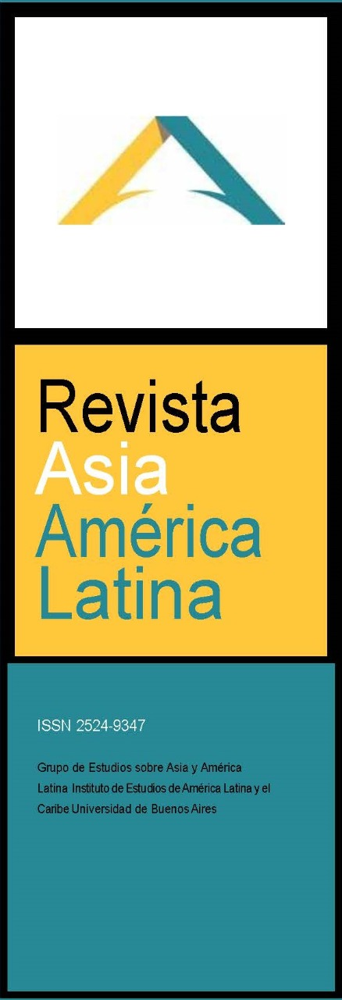
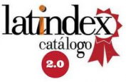

Special Issue Modelo ASEAN 2025
- 11.1 Introducción
- 11.2 Brunéi Darussalam y la diplomacia del consenso: los tres grandes desafíos que enfrenta la ASEAN
- 11.3 Reino de Camboya y ASEAN: desafíos políticos, perspectivas y desarrollo turístico
- 11.4 Adaptabilidad estratégica en el Indo-Pacífico: la política exterior de Filipinas ante el Mar del Sur de China, Myanmar y el turismo sustentable
- 11.5 Tres prioridades de Indonesia en la ASEAN: Mar de China Meridional, la crisis de Myanmar y el turismo sostenible
- 11.6 Laos y su postura en la ASEAN frente a las problemáticas del Mar Meridional de China, la crisis de Myanmar y el desafío del turismo sostenible
- 11.7 La política exterior de Malasia: una diplomacia silenciosa, ruidosa y apoyada en el derecho internacional
- 11.8 Myanmar y el Gobierno de Unidad Nacional: desafíos del Mar de China Meridional, crisis rohingya y turismo sustentable
- 11.9 La ruta tailandesa en el MAM 2025: seguridad marítima, crisis en Myanmar y su rol en el turismo sustentable
- 11.10 La postura vietnamita frente a la crisis de Myanmar, las disputas por el Mar de China Meridional y el turismo sostenible: una política exterior coherente
Early View

Autores
Artículos
Reseñas
Lic. Alejandro Lamarque
DirecciónPolitólogo, docente, investigador y maestrando en Gobierno por la Universidad de Buenos Aires.
Lic. Mariano Statello
DirecciónPolitólogo e investigador por la Universidad de Buenos Aires.
Hacemos sinergia con
Partners
